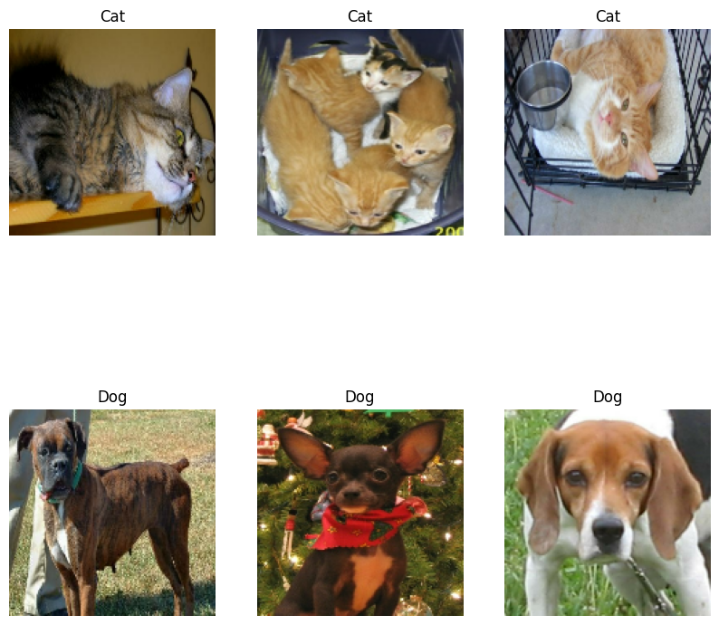
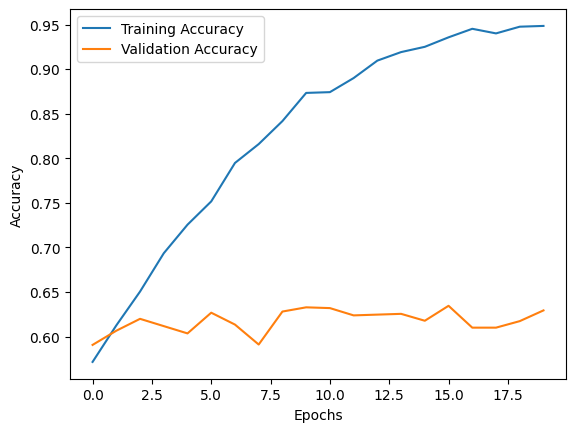
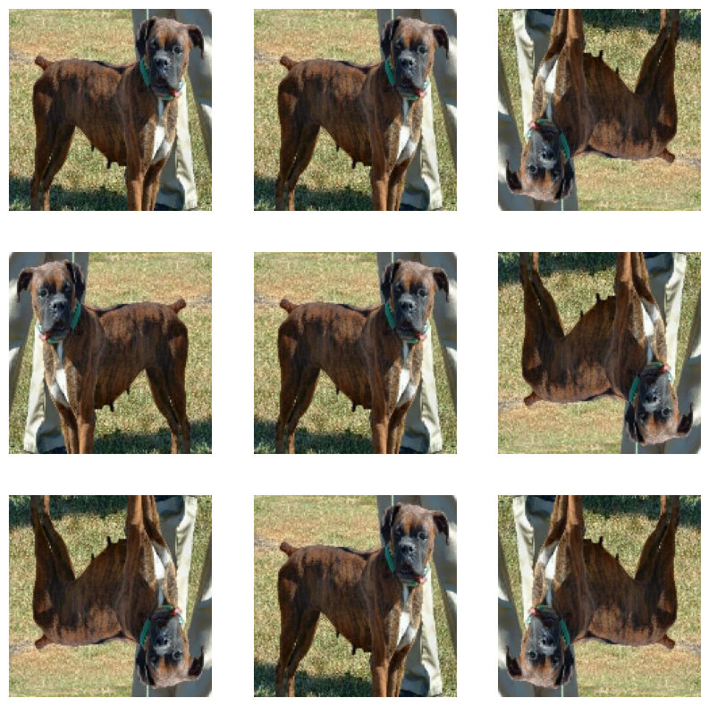
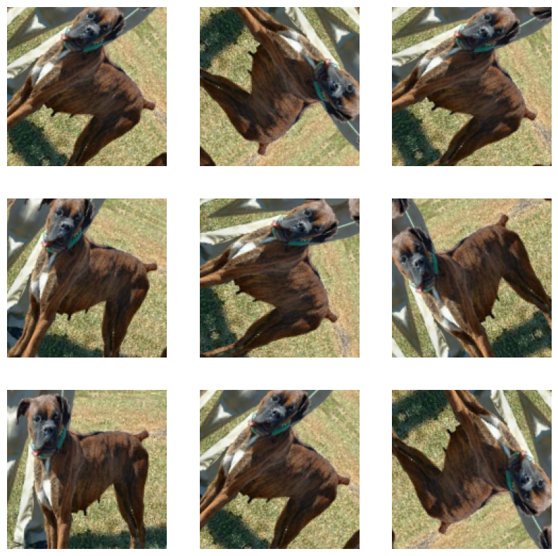
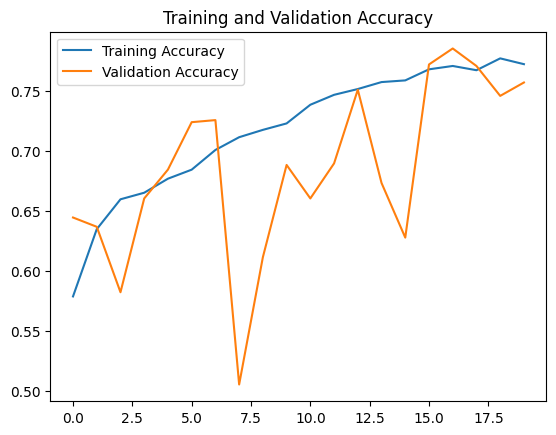
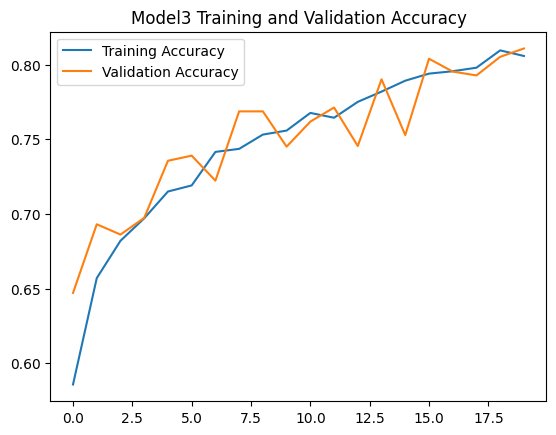
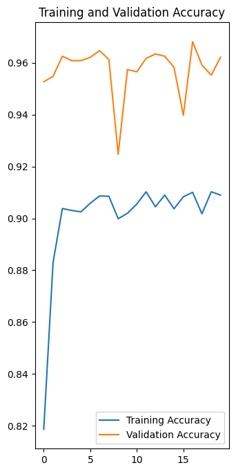

import keras
import os
from keras import utils
import tensorflow_datasets as tfdsHW 5: Image Classification
In this blog post we will go over how to create a model that can identify and classifiy images using TensorFlow
Step 1:
We will start by importing the required packages for this project. Once we import the packages we can then acsseses the sample datat set froim Kaggle with the labeld images of cats and dogs. We need this dataset to be able to train, validate, and test our model toi make sure it is working as we want it to.
train_ds, validation_ds, test_ds = tfds.load(
"cats_vs_dogs",
# 40% for training, 10% for validation, and 10% for test (the rest unused)
split=["train[:40%]", "train[40%:50%]", "train[50%:60%]"],
as_supervised=True, # Include labels
)
print(f"Number of training samples: {train_ds.cardinality()}")
print(f"Number of validation samples: {validation_ds.cardinality()}")
print(f"Number of test samples: {test_ds.cardinality()}")Downloading and preparing dataset 786.67 MiB (download: 786.67 MiB, generated: 1.04 GiB, total: 1.81 GiB) to /root/tensorflow_datasets/cats_vs_dogs/4.0.1...
Dataset cats_vs_dogs downloaded and prepared to /root/tensorflow_datasets/cats_vs_dogs/4.0.1. Subsequent calls will reuse this data.
Number of training samples: 9305
Number of validation samples: 2326
Number of test samples: 2326WARNING:absl:1738 images were corrupted and were skippedNow that we run this code we have create a dataset that we will use to feed into our machine learining model. The next step is to go through all of our pictures and resize them to make sure they all fit the same format. We need to do this because the architecture of the model (number of layers, filter sizes, strides, etc.) is designed to process images of a specific dimension. Resizing ensures all input images have the same dimensions expected by the model. The code below resizes the images to a fixed size of 150x150
resize_fn = keras.layers.Resizing(150, 150)
train_ds = train_ds.map(lambda x, y: (resize_fn(x), y))
validation_ds = validation_ds.map(lambda x, y: (resize_fn(x), y))
test_ds = test_ds.map(lambda x, y: (resize_fn(x), y))Next we will optimize the data pipeline for machine learning models, ensuring that data is efficiently prepared and supplied to the model during training, validation, and testing phases. This optimization helps in reducing Input/Output overhead, improving memory usage, and potentially speeding up the training process.
The code below does this by using batch_size to group multiple elements of the dataset into batches, so instead of going over each picture individualy, the model receive batch_size samples at each training step.The .prefetch(buffer_size) method allows the dataset to preload the next batch of data while the model is training on the current batch. Next the tf_data.AUTOTUNE allows TensorFlow to automatically tune the prefetch buffer size at runtime, finding an optimal value based on the system and environment conditions. Lastly the .cache() method caches the dataset, either in memory or on disk, after the first epoch of training. Overall the code goes over all the data points, trains the model, validate it and tests it.
from tensorflow import data as tf_data
batch_size = 64
train_ds = train_ds.batch(batch_size).prefetch(tf_data.AUTOTUNE).cache()
validation_ds = validation_ds.batch(batch_size).prefetch(tf_data.AUTOTUNE).cache()
test_ds = test_ds.batch(batch_size).prefetch(tf_data.AUTOTUNE).cache()Exploring our Database
Next we will explore our current dataset by creating a function that will create a two row visualization. One row will show 3 random picture of cats, while the second will show 3 random rows of dogs.
To visualize three pictures of dogs and three pictures of cats we first start by creating a plotting area that is 10x10. The function then creats two list, one for dogs and one for cats. We then iterate through the database going over only one batch. As it loops through the batch it takes the images labeld 0 and put them in the cats list and 1 for dogs. Once our lists are done we then creat subplot and visualize the images for the cats and dogs.
import matplotlib.pyplot as plt
def visualize_images(dataset):
plt.figure(figsize=(10, 10))
cat_images = []
dog_images = []
for images, labels in dataset.take(1):
for i in range(len(labels)):
if len(cat_images) < 3 and labels[i] == 0:
cat_images.append(images[i].numpy().astype("uint8"))
elif len(dog_images) < 3 and labels[i] == 1:
dog_images.append(images[i].numpy().astype("uint8"))
for i, image in enumerate(cat_images):
plt.subplot(2, 3, i + 1)
plt.imshow(image)
plt.title("Cat")
plt.axis("off") # so it does not show the number grid
for i, image in enumerate(dog_images):
plt.subplot(2, 3, i + 4)
plt.imshow(image)
plt.title("Dog")
plt.axis("off") # so it does not show the number grid
plt.show()
# Assuming train_dataset is your dataset variable
visualize_images(train_ds)
Such cute pictures of cats and dogs ! for the next step we will be to create a baseline for the model prefromance
Checking the Label Frequencies
The line belows creats an iterator (labels_iterator) which will iterate over all the labels in our training data. We will then create a baseline model which in machine learning is a simple model or heuristic used as a reference point for comparing how well a more complex model is performing.
labels_iterator= train_ds.unbatch().map(lambda image, label: label).as_numpy_iterator()Next we are going to compute the total number of images in our database, seperating it by cats(0) and dogs(1). We will iterate over the labels_iterator once and add one for the dog list and one for cat list everytime there is a 0 or a 1.
# Initialize counters for each label
cat_count = 0
dog_count = 0
# Iterate over the labels_iterator to count labels
for label in labels_iterator:
if label == 0:
cat_count += 1
elif label == 1:
dog_count += 1
# Print out the counts
print(f"Number of cat images: {cat_count}")
print(f"Number of dog images: {dog_count}")Number of cat images: 4637
Number of dog images: 4668To calculate the frequencies that the dog and cat images show up and check the baseline accuracy we add the total number of cats and dog images and divided the amount of cat images by total, and dog images by total images to get the frequencies in which they show up in the database.
# Calculate frequencies
total_img = cat_count + dog_count
cat_frequency = cat_count / total_img
dog_frequency = dog_count / total_img
print(f"Frequency of Cats: {cat_frequency:.2f}")
print(f"Frequency of Dogs: {dog_frequency:.2f}")
Frequency of Cats: 0.50
Frequency of Dogs: 0.50
most_frequent_label_count = max(cat_count, dog_count)
baseline_accuracy = most_frequent_label_count / total_img
print(f"Baseline model accuracy: {baseline_accuracy:.2f}")Baseline model accuracy: 0.50Discussing the Baseline Model Accuracy
While there are more images of dogs than cats in the database, they both show up in the database at the same frequency of 50%. When we calaculated the baseline model accuracy we only got 50% . This mean the model will be correct simply by guessing the most frequent label every time 0.50 proprotions of the time. When we continue working on our models we should aime to get a high frequency of accuracy than 50%!
Now that we now our baseline accuracy, we are ready to start working on our first model.
First Model
We will creat a keras.Sequential model with Conv2D layers, MaxPooling2D layers, Flatten layer,Dense layer, and Dropout layer. To do this we will first start by importing layers, models from tensorflow.keras . The model will classify images as either 1 or 0- that is either cat or dog. We start with models.Sequential() which intializes a liner stack of layers so each layer will have exactly one inpute tensor and one output tensor which will be the input tensor to the other layer.
Before we move to the rest of the modle lets talk about tensors. Tensors are the fundamental data structures used in deep learning to generalize scalars, vectirs, and matrices to higher dimensions. When using it in the model the tensors are manipulated through operations duirng forward and backward asses of trianing. Essentially, tensors are container of data similar to an array.
Now that we understnd tensors we can continue with our model. We creat our first Conv2D layer which adds the first 2D convolutional layer with 32 filters (or kernels), each of size 3x3. The activation=‘relu’ parameter applies the Rectified Linear Unit (ReLU) activation function to the output of each convolution operation. the input_shape refres to the shape of our images, which we made 150x150 earlier when resizing the images. The first MaxPooling 2D layer reduces the spatial dimensions (height and width) of the input feature maps by half, effectively downsampling the input and reducing the number of parameters the model needs to learn, which helps in controlling overfitting.
Next we move to the second Conv2D layer which increases the model to allow it to learn more complex features from the input images.The second MaxPooling2D layer is also used to further reduce the spatial dimensions of the feature maps. We then us layers.Flatten() to transforms the 3D output of the preceding layer into a 1D array, which is necessary because the following dense layer expects a 1D input.
Lastly, our two dense layers and dropout layer are used to takes the flattened input and learns non-linear combinations of features. Then to randomly sets half of the input units to 0 at each update during training time, which helps prevent overfitting by ensuring that the model does not become too reliant on any one node.And lastly, the layers.Dense(1, activation=‘sigmoid’), outputs a single value between 0 and 1, representing the probability that the input image belongs to the target class (1).
from tensorflow.keras import layers, models
model1 = models.Sequential([
# First Conv2D layer
layers.Conv2D(32, (3, 3), activation='relu'),
# First MaxPooling2D layer
layers.MaxPooling2D((2, 2)),
# Second Conv2D layer
layers.Conv2D(64, (3, 3), activation='relu'),
# Second MaxPooling2D layer
layers.MaxPooling2D((2, 2)),
layers.Conv2D(128, (3, 3), activation='relu'),
layers.MaxPooling2D((2, 2)),
# Flatten layer to convert 3D feature maps to 1D feature vectors
layers.Flatten(),
# Dense layer
layers.Dense(128, activation='relu'),
# Dropout layer to reduce overfitting
layers.Dropout(0.4),
# Output layer
layers.Dense(1, activation='sigmoid')
])Compile the model
Once we created the model we need to compile it to configure the model for training in the TensorFlow/Keras framework. This oart is crucial for setting up the model for training, defining how it should learn (optimizer), what it should minimize (loss function), and how its performance should be measured (metrics).
model1.compile(optimizer='adam',
loss='binary_crossentropy',
metrics=['accuracy'])Train the Model
history = model1.fit(train_ds,
epochs=20,
validation_data=validation_ds)Epoch 1/20
146/146 [==============================] - 410s 3s/step - loss: 6.0001 - accuracy: 0.5716 - val_loss: 0.6708 - val_accuracy: 0.5907
Epoch 2/20
146/146 [==============================] - 405s 3s/step - loss: 0.6556 - accuracy: 0.6126 - val_loss: 0.6578 - val_accuracy: 0.6066
Epoch 3/20
146/146 [==============================] - 406s 3s/step - loss: 0.6132 - accuracy: 0.6505 - val_loss: 0.6754 - val_accuracy: 0.6199
Epoch 4/20
146/146 [==============================] - 397s 3s/step - loss: 0.5779 - accuracy: 0.6935 - val_loss: 0.6973 - val_accuracy: 0.6118
Epoch 5/20
146/146 [==============================] - 403s 3s/step - loss: 0.5260 - accuracy: 0.7255 - val_loss: 0.7253 - val_accuracy: 0.6036
Epoch 6/20
146/146 [==============================] - 386s 3s/step - loss: 0.4838 - accuracy: 0.7516 - val_loss: 0.7233 - val_accuracy: 0.6268
Epoch 7/20
146/146 [==============================] - 406s 3s/step - loss: 0.4277 - accuracy: 0.7947 - val_loss: 0.7512 - val_accuracy: 0.6135
Epoch 8/20
146/146 [==============================] - 424s 3s/step - loss: 0.3935 - accuracy: 0.8159 - val_loss: 0.8102 - val_accuracy: 0.5911
Epoch 9/20
146/146 [==============================] - 406s 3s/step - loss: 0.3507 - accuracy: 0.8417 - val_loss: 0.8663 - val_accuracy: 0.6281
Epoch 10/20
146/146 [==============================] - 384s 3s/step - loss: 0.2897 - accuracy: 0.8733 - val_loss: 1.1332 - val_accuracy: 0.6328
Epoch 11/20
146/146 [==============================] - 407s 3s/step - loss: 0.2878 - accuracy: 0.8742 - val_loss: 0.9575 - val_accuracy: 0.6320
Epoch 12/20
146/146 [==============================] - 425s 3s/step - loss: 0.2689 - accuracy: 0.8900 - val_loss: 1.0345 - val_accuracy: 0.6238
Epoch 13/20
146/146 [==============================] - 405s 3s/step - loss: 0.2221 - accuracy: 0.9095 - val_loss: 1.2777 - val_accuracy: 0.6247
Epoch 14/20
146/146 [==============================] - 412s 3s/step - loss: 0.2065 - accuracy: 0.9191 - val_loss: 1.1663 - val_accuracy: 0.6255
Epoch 15/20
146/146 [==============================] - 408s 3s/step - loss: 0.1906 - accuracy: 0.9250 - val_loss: 1.2094 - val_accuracy: 0.6178
Epoch 16/20
146/146 [==============================] - 406s 3s/step - loss: 0.1646 - accuracy: 0.9356 - val_loss: 1.3935 - val_accuracy: 0.6346
Epoch 17/20
146/146 [==============================] - 418s 3s/step - loss: 0.1592 - accuracy: 0.9452 - val_loss: 1.4878 - val_accuracy: 0.6101
Epoch 18/20
146/146 [==============================] - 405s 3s/step - loss: 0.1603 - accuracy: 0.9400 - val_loss: 1.3832 - val_accuracy: 0.6101
Epoch 19/20
146/146 [==============================] - 393s 3s/step - loss: 0.1471 - accuracy: 0.9476 - val_loss: 1.4424 - val_accuracy: 0.6174
Epoch 20/20
146/146 [==============================] - 409s 3s/step - loss: 0.1405 - accuracy: 0.9484 - val_loss: 1.6150 - val_accuracy: 0.6294Before analyzing the results we are also going to plot the training and validation accuracy
import matplotlib.pyplot as plt
plt.plot(history.history['accuracy'], label='Training Accuracy')
plt.plot(history.history['val_accuracy'], label='Validation Accuracy')
plt.xlabel('Epochs')
plt.ylabel('Accuracy')
plt.legend()
plt.show()
After running the code and training the model the accuracy of the code stablized at around 60%
In compare to the baseline, this model is 10% more accurate in predicting the correct images. There does seem to be a lot of overfitting as the training accuracy seems to go up to 90% while the validation accuracy stays at around 60%.
Model with Data Augmentation
For this model we will be adding data augmentation layers to your model. We are going to include some modified copies of the same imagies into our training set to imporve the model ability of identifying images
We will first start by creating a keras.layers.RandomFlip() layer. In the code below we select a single image and apply the augmentation on it to test to see how it will show. The random_flip_layer creats a new layer that we will than apply to the image and then plot it.
import matplotlib.pyplot as plt
# take a single image from the dataset to apply augmentation
for images, _ in train_ds.take(1):
# Take the first image in the batch for demonstration
original_image = images[0]
break
# Create the RandomFlip layer
random_flip_layer = keras.Sequential([
keras.layers.RandomFlip("horizontal_and_vertical"),
])
# Visualize original and flipped images
plt.figure(figsize=(10, 10))
for images, _ in train_ds.take(1):
for i in range(9):
augmented_ig = random_flip_layer(images)
ax = plt.subplot(3, 3, i + 1)
plt.imshow(augmented_ig[0].numpy().astype("uint8"))
plt.axis("off")
plt.show()
Wow look how cool that is! Now lets do the same thing but instead of flip we will rotate the image. To increase the rotation range we can make the factor be .45 if the factor was smaller, so would the rotataion range be.
rotation_ig = keras.Sequential([
keras.layers.RandomRotation(factor=0.45),
])
# Visualize original and rotated images
plt.figure(figsize=(10, 10))
for images, _ in train_ds.take(1):
for i in range(9):
augmented_ig2 = rotation_ig(images)
ax = plt.subplot(3, 3, i + 1)
plt.imshow(augmented_ig2[0].numpy().astype("uint8"))
plt.axis("off")
plt.show()
Once we were able to visualize the two forms of agumantation we will incoporate them and create model2. Similar to model 1, we will train the datat and keep track of its accuracy. To make sure that the model is more accurate now that we added the agumentation factor we will change teh rotation range back down to .2. We also added layers.BatchNormalization() which will improve training stability and speed by normalizing the input to each activation layer and changed the dropout layer to .5 instead of .4 to help with the overfitting
model2 = models.Sequential([
# Data Augmentation layers
layers.RandomFlip("horizontal_and_vertical"),
layers.RandomRotation(0.2),
# First Conv2D layer
layers.Conv2D(32, (3, 3), activation='relu'),
# First MaxPooling2D layer
layers.MaxPooling2D((2, 2)),
# Second Conv2D layer
layers.Conv2D(64, (3, 3), activation='relu'),
layers.BatchNormalization(),
# Second MaxPooling2D layer
layers.MaxPooling2D((2, 2)),
layers.Conv2D(128, (3, 3), activation='relu'),
layers.MaxPooling2D((2, 2)),
# Flatten layer to convert 3D feature maps to 1D feature vectors
layers.Flatten(),
# Dense layer
layers.Dense(128, activation='relu'),
# Dropout layer to reduce overfitting
layers.Dropout(0.5),
# Output layer
layers.Dense(1, activation='sigmoid')
])
# Compile the model
model2.compile(optimizer='adam',
loss='binary_crossentropy',
metrics=['accuracy'])
# Train the model with data augmentation
history = model2.fit(train_ds,
epochs=20,
validation_data=validation_ds)Epoch 1/20
146/146 [==============================] - 10s 46ms/step - loss: 1.0536 - accuracy: 0.5786 - val_loss: 0.6513 - val_accuracy: 0.6445
Epoch 2/20
146/146 [==============================] - 7s 45ms/step - loss: 0.6405 - accuracy: 0.6347 - val_loss: 0.6429 - val_accuracy: 0.6367
Epoch 3/20
146/146 [==============================] - 7s 45ms/step - loss: 0.6184 - accuracy: 0.6596 - val_loss: 0.6523 - val_accuracy: 0.5821
Epoch 4/20
146/146 [==============================] - 7s 46ms/step - loss: 0.6119 - accuracy: 0.6651 - val_loss: 0.5984 - val_accuracy: 0.6604
Epoch 5/20
146/146 [==============================] - 7s 45ms/step - loss: 0.6045 - accuracy: 0.6768 - val_loss: 0.5956 - val_accuracy: 0.6844
Epoch 6/20
146/146 [==============================] - 7s 46ms/step - loss: 0.5869 - accuracy: 0.6844 - val_loss: 0.5415 - val_accuracy: 0.7240
Epoch 7/20
146/146 [==============================] - 7s 47ms/step - loss: 0.5756 - accuracy: 0.7008 - val_loss: 0.5436 - val_accuracy: 0.7257
Epoch 8/20
146/146 [==============================] - 7s 46ms/step - loss: 0.5662 - accuracy: 0.7114 - val_loss: 1.2838 - val_accuracy: 0.5052
Epoch 9/20
146/146 [==============================] - 7s 48ms/step - loss: 0.5612 - accuracy: 0.7176 - val_loss: 0.7067 - val_accuracy: 0.6113
Epoch 10/20
146/146 [==============================] - 8s 53ms/step - loss: 0.5496 - accuracy: 0.7229 - val_loss: 0.5536 - val_accuracy: 0.6883
Epoch 11/20
146/146 [==============================] - 7s 46ms/step - loss: 0.5404 - accuracy: 0.7385 - val_loss: 0.5986 - val_accuracy: 0.6604
Epoch 12/20
146/146 [==============================] - 7s 51ms/step - loss: 0.5304 - accuracy: 0.7468 - val_loss: 0.6166 - val_accuracy: 0.6896
Epoch 13/20
146/146 [==============================] - 7s 49ms/step - loss: 0.5197 - accuracy: 0.7516 - val_loss: 0.4979 - val_accuracy: 0.7511
Epoch 14/20
146/146 [==============================] - 7s 47ms/step - loss: 0.5161 - accuracy: 0.7574 - val_loss: 0.5920 - val_accuracy: 0.6733
Epoch 15/20
146/146 [==============================] - 7s 49ms/step - loss: 0.5079 - accuracy: 0.7588 - val_loss: 0.8534 - val_accuracy: 0.6277
Epoch 16/20
146/146 [==============================] - 7s 48ms/step - loss: 0.4959 - accuracy: 0.7681 - val_loss: 0.4682 - val_accuracy: 0.7721
Epoch 17/20
146/146 [==============================] - 7s 50ms/step - loss: 0.4855 - accuracy: 0.7709 - val_loss: 0.4667 - val_accuracy: 0.7855
Epoch 18/20
146/146 [==============================] - 7s 48ms/step - loss: 0.4950 - accuracy: 0.7673 - val_loss: 0.4966 - val_accuracy: 0.7709
Epoch 19/20
146/146 [==============================] - 7s 47ms/step - loss: 0.4841 - accuracy: 0.7772 - val_loss: 0.5106 - val_accuracy: 0.7459
Epoch 20/20
146/146 [==============================] - 7s 47ms/step - loss: 0.4868 - accuracy: 0.7724 - val_loss: 0.5122 - val_accuracy: 0.7571Let us again visualize the training accuracy and validation accuracy
plt.plot(history.history['accuracy'], label='Training Accuracy')
plt.plot(history.history['val_accuracy'], label='Validation Accuracy')
plt.title('Training and Validation Accuracy')
plt.legend()
plt.show()
With the data agumentation, the validation accuracy of the model was between 60% and 70% There were a few drops in which the accuracy went down to 50 or low 60 but then it went back up to the 70s. In comparsion to model1 the validation accuracy has increased although the training accuracy seem to have been lower than it was in model 1. However, model2 does seem to be way better at acounting for and fixing overfitting.
The diffrenece between the models can be seen even better when looking at the graph. the graph for model2 shows how drastically the validation accuracy changed through the training while in model 1 the validation accuracy seemed to have stayed consistently low.
Data Preprocessing
To make the model train fatser we can also change the RGB values. Changing the RGB value can also help save our time and let us shift our attention to dealing with actual signal in the data. RBG is the color model used in digital imaging and displays. It stands for Red Green and Blue and is based on the idea that all colors are based on teh combination of those three colors. Often time each color is typically represented by a value ranging from 0 to 255. To make the model train faster we wnat the RGB to be normalized between 0 and 1 which is what we are goining to try and do.
For this section we will create model3 with a preprocessing layer. The preprocessing layer coded below will normalize image pixel values
Let’s break down how to creat the preprocessor layer. First we will start by defining the input tensor for the preprocessing model. Next step is to creat the rescaling layer. The scale_layer will transform the input pixel values. Llastly, the last line bundles the input tensor and the output of the rescaling layer into a standalone Keras model named preprocessor. Essentially what this will do is take an input image/s and produces the normalized version of the image/s as output.
# Define the input shape
i = keras.Input(shape=(150, 150, 3))
# Create the Rescaling layer to normalize pixel values
scale_layer = keras.layers.Rescaling(scale=1 / 127.5, offset=-1)
# Apply the scaling layer to the input
x = scale_layer(i)
# Create a preprocessing model
preprocessor = keras.Model(inputs=[i], outputs=[x])Next up we will need to creat model 3. Similar to model 1 and 2 we will include all the same factors as well as the agumentation section in addition to the preprocessor. Because we made more changes to teh datat we will also need to make further adjusment to the model to make sure it is more accurate. We increased the dense layer to 256 and chnaged the drop layer to .2
model3 = keras.Sequential([
preprocessor, # Preprocessing layer for input normalization
# Data augmentation layers
keras.layers.RandomFlip("horizontal_and_vertical"),
keras.layers.RandomRotation(0.2),
# First Conv2D layer
layers.Conv2D(32, (3, 3), activation='relu'),
# First MaxPooling2D layer
layers.MaxPooling2D((2, 2)),
# Second Conv2D layer
layers.Conv2D(64, (3, 3), activation='relu'),
layers.BatchNormalization(),
# Second MaxPooling2D layer
layers.MaxPooling2D((2, 2)),
layers.Conv2D(128, (3, 3), activation='relu'),
layers.MaxPooling2D((2, 2)),
# Flatten layer to convert 3D feature maps to 1D feature vectors
layers.Flatten(),
# Dense layer
layers.Dense(256, activation='relu'),
# Dropout layer to reduce overfitting
layers.Dropout(0.2),
# Output layer
layers.Dense(1, activation='sigmoid')
])
# Compile the model
model3.compile(optimizer='adam',
loss='binary_crossentropy',
metrics=['accuracy'])history = model3.fit(train_ds,
epochs=20,
validation_data=validation_ds)Epoch 1/20
146/146 [==============================] - 9s 48ms/step - loss: 1.3734 - accuracy: 0.5857 - val_loss: 0.6798 - val_accuracy: 0.6470
Epoch 2/20
146/146 [==============================] - 7s 48ms/step - loss: 0.6146 - accuracy: 0.6570 - val_loss: 0.6377 - val_accuracy: 0.6930
Epoch 3/20
146/146 [==============================] - 7s 47ms/step - loss: 0.5927 - accuracy: 0.6820 - val_loss: 0.5921 - val_accuracy: 0.6862
Epoch 4/20
146/146 [==============================] - 7s 48ms/step - loss: 0.5750 - accuracy: 0.6970 - val_loss: 0.5740 - val_accuracy: 0.6973
Epoch 5/20
146/146 [==============================] - 7s 48ms/step - loss: 0.5563 - accuracy: 0.7150 - val_loss: 0.5271 - val_accuracy: 0.7356
Epoch 6/20
146/146 [==============================] - 7s 48ms/step - loss: 0.5441 - accuracy: 0.7191 - val_loss: 0.5199 - val_accuracy: 0.7390
Epoch 7/20
146/146 [==============================] - 7s 48ms/step - loss: 0.5304 - accuracy: 0.7415 - val_loss: 0.5779 - val_accuracy: 0.7223
Epoch 8/20
146/146 [==============================] - 7s 48ms/step - loss: 0.5178 - accuracy: 0.7436 - val_loss: 0.5007 - val_accuracy: 0.7687
Epoch 9/20
146/146 [==============================] - 7s 48ms/step - loss: 0.5067 - accuracy: 0.7531 - val_loss: 0.4866 - val_accuracy: 0.7687
Epoch 10/20
146/146 [==============================] - 7s 48ms/step - loss: 0.4978 - accuracy: 0.7558 - val_loss: 0.5418 - val_accuracy: 0.7451
Epoch 11/20
146/146 [==============================] - 7s 48ms/step - loss: 0.4887 - accuracy: 0.7677 - val_loss: 0.4750 - val_accuracy: 0.7618
Epoch 12/20
146/146 [==============================] - 7s 48ms/step - loss: 0.4901 - accuracy: 0.7644 - val_loss: 0.4799 - val_accuracy: 0.7713
Epoch 13/20
146/146 [==============================] - 7s 49ms/step - loss: 0.4733 - accuracy: 0.7751 - val_loss: 0.5148 - val_accuracy: 0.7455
Epoch 14/20
146/146 [==============================] - 7s 49ms/step - loss: 0.4636 - accuracy: 0.7819 - val_loss: 0.4434 - val_accuracy: 0.7902
Epoch 15/20
146/146 [==============================] - 7s 49ms/step - loss: 0.4472 - accuracy: 0.7893 - val_loss: 0.5685 - val_accuracy: 0.7528
Epoch 16/20
146/146 [==============================] - 7s 49ms/step - loss: 0.4451 - accuracy: 0.7940 - val_loss: 0.4437 - val_accuracy: 0.8040
Epoch 17/20
146/146 [==============================] - 7s 49ms/step - loss: 0.4374 - accuracy: 0.7956 - val_loss: 0.4520 - val_accuracy: 0.7954
Epoch 18/20
146/146 [==============================] - 7s 49ms/step - loss: 0.4354 - accuracy: 0.7980 - val_loss: 0.4444 - val_accuracy: 0.7928
Epoch 19/20
146/146 [==============================] - 7s 48ms/step - loss: 0.4190 - accuracy: 0.8096 - val_loss: 0.4100 - val_accuracy: 0.8052
Epoch 20/20
146/146 [==============================] - 7s 49ms/step - loss: 0.4217 - accuracy: 0.8058 - val_loss: 0.4142 - val_accuracy: 0.8108import matplotlib.pyplot as plt
plt.plot(history.history['accuracy'], label='Training Accuracy')
plt.plot(history.history['val_accuracy'], label='Validation Accuracy')
plt.title('Model3 Training and Validation Accuracy')
plt.legend()
plt.show()
We were able to get the model Validation accuracy up to 81% this is again big imporvemnt from model 1 and 2. Additionally , were were able to minimize abnd bring down the overfiting by chnaging the drop layer to .2.
Transfer Learning
While we were able to create a model that can distingiuse between pictures of dogs and cats, there are people who have already created similar models. In this next section we are going to try to use a pre existing model to do our task.
We will first need to start by getting a preexisting model and use it as our base model before incoportating it to our model and train our data on it.
We will first start by importing the MobileNetV3Large model and making it into a layer that we will be able to add to our model.
IMG_SHAPE = (150, 150, 3)
base_model = keras.applications.MobileNetV3Large(input_shape=IMG_SHAPE,
include_top=False,
weights='imagenet')
base_model.trainable = False
i = keras.Input(shape=IMG_SHAPE)
x = base_model(i, training = False)
base_model_layer = keras.Model(inputs = i, outputs = x)WARNING:tensorflow:`input_shape` is undefined or non-square, or `rows` is not 224. Weights for input shape (224, 224) will be loaded as the default.Downloading data from https://storage.googleapis.com/tensorflow/keras-applications/mobilenet_v3/weights_mobilenet_v3_large_224_1.0_float_no_top_v2.h5
12683000/12683000 [==============================] - 0s 0us/stepNow that we have the pre made model we will make model4 which will include this new added layer.
While model 4 also included the data agumentation and a layer for classification, it is way more accurat thanks to the base_model_layer.
Lets break down the code for model 4. To make the model look cleaner we created the data_agumentation variable outside of the model construction. We then construct the model by incoportating the base_model_layer and the augmentation layer. We the use GlobalMaxPooling2D to reduces the spatial dimensions of the feature maps to a single maximum value per feature map. We set the drpout at .20 to help minimize overfitting.
Once the model is done with compile it and then train it
data_augmentation = keras.Sequential([
keras.layers.RandomFlip("horizontal_and_vertical"),
keras.layers.RandomRotation(0.2),
])
# Model construction
model4 = keras.Sequential([
data_augmentation,
base_model_layer,
layers.GlobalMaxPooling2D(),
layers.Dropout(0.2), # Dropout layer to reduce overfitting
layers.Dense(2, activation='softmax') # Classification layer
])
# Compile the model
model4.compile(optimizer='adam',
loss='sparse_categorical_crossentropy',
metrics=['accuracy'])history = model4.fit(train_ds,
epochs=20,
validation_data=validation_ds)Epoch 1/20
146/146 [==============================] - 16s 63ms/step - loss: 1.7371 - accuracy: 0.8186 - val_loss: 0.3864 - val_accuracy: 0.9527
Epoch 2/20
146/146 [==============================] - 6s 43ms/step - loss: 0.9484 - accuracy: 0.8830 - val_loss: 0.3616 - val_accuracy: 0.9549
Epoch 3/20
146/146 [==============================] - 6s 44ms/step - loss: 0.6807 - accuracy: 0.9038 - val_loss: 0.1966 - val_accuracy: 0.9626
Epoch 4/20
146/146 [==============================] - 6s 43ms/step - loss: 0.5961 - accuracy: 0.9031 - val_loss: 0.1960 - val_accuracy: 0.9609
Epoch 5/20
146/146 [==============================] - 6s 44ms/step - loss: 0.5247 - accuracy: 0.9025 - val_loss: 0.1887 - val_accuracy: 0.9609
Epoch 6/20
146/146 [==============================] - 6s 43ms/step - loss: 0.4708 - accuracy: 0.9059 - val_loss: 0.1530 - val_accuracy: 0.9622
Epoch 7/20
146/146 [==============================] - 6s 44ms/step - loss: 0.4174 - accuracy: 0.9087 - val_loss: 0.1354 - val_accuracy: 0.9647
Epoch 8/20
146/146 [==============================] - 6s 44ms/step - loss: 0.3734 - accuracy: 0.9085 - val_loss: 0.1250 - val_accuracy: 0.9613
Epoch 9/20
146/146 [==============================] - 6s 43ms/step - loss: 0.3980 - accuracy: 0.8998 - val_loss: 0.3346 - val_accuracy: 0.9248
Epoch 10/20
146/146 [==============================] - 6s 44ms/step - loss: 0.3886 - accuracy: 0.9020 - val_loss: 0.1424 - val_accuracy: 0.9574
Epoch 11/20
146/146 [==============================] - 6s 43ms/step - loss: 0.3555 - accuracy: 0.9055 - val_loss: 0.1492 - val_accuracy: 0.9566
Epoch 12/20
146/146 [==============================] - 6s 44ms/step - loss: 0.3352 - accuracy: 0.9103 - val_loss: 0.1395 - val_accuracy: 0.9617
Epoch 13/20
146/146 [==============================] - 6s 43ms/step - loss: 0.3212 - accuracy: 0.9045 - val_loss: 0.1145 - val_accuracy: 0.9635
Epoch 14/20
146/146 [==============================] - 7s 46ms/step - loss: 0.3161 - accuracy: 0.9090 - val_loss: 0.1256 - val_accuracy: 0.9626
Epoch 15/20
146/146 [==============================] - 6s 43ms/step - loss: 0.3287 - accuracy: 0.9037 - val_loss: 0.1235 - val_accuracy: 0.9583
Epoch 16/20
146/146 [==============================] - 6s 44ms/step - loss: 0.3050 - accuracy: 0.9083 - val_loss: 0.2015 - val_accuracy: 0.9398
Epoch 17/20
146/146 [==============================] - 6s 43ms/step - loss: 0.3136 - accuracy: 0.9100 - val_loss: 0.1114 - val_accuracy: 0.9682
Epoch 18/20
146/146 [==============================] - 6s 44ms/step - loss: 0.3184 - accuracy: 0.9018 - val_loss: 0.1304 - val_accuracy: 0.9592
Epoch 19/20
146/146 [==============================] - 6s 44ms/step - loss: 0.2954 - accuracy: 0.9103 - val_loss: 0.1378 - val_accuracy: 0.9553
Epoch 20/20
146/146 [==============================] - 6s 44ms/step - loss: 0.2985 - accuracy: 0.9090 - val_loss: 0.1122 - val_accuracy: 0.9622model4.summary()Model: "sequential_26"
_________________________________________________________________
Layer (type) Output Shape Param #
=================================================================
sequential_25 (Sequential) (None, 150, 150, 3) 0
model_1 (Functional) (None, 5, 5, 960) 2996352
global_max_pooling2d_1 (Gl (None, 960) 0
obalMaxPooling2D)
dropout_22 (Dropout) (None, 960) 0
dense_43 (Dense) (None, 2) 1922
=================================================================
Total params: 2998274 (11.44 MB)
Trainable params: 1922 (7.51 KB)
Non-trainable params: 2996352 (11.43 MB)
_________________________________________________________________acc = history.history['accuracy']
val_acc = history.history['val_accuracy']
loss = history.history['loss']
val_loss = history.history['val_loss']
epochs_range = range(20)
plt.figure(figsize=(8, 8))
plt.subplot(1, 2, 1)
plt.plot(epochs_range, acc, label='Training Accuracy')
plt.plot(epochs_range, val_acc, label='Validation Accuracy')
plt.legend(loc='lower right')
plt.title('Training and Validation Accuracy')
Text(0.5, 1.0, 'Training and Validation Accuracy')
We started with around 50%-60% accuracy in our first model, and now with the help of the base model we were able to bring up the accuracy all the way up to around 95%. As seen in the summary we only have 2998274 parameter to train the model on. There also seem to be very little over fitting of around 2%-3%.
Score on test data
After making all theses models it is time for us to run the accuracy test on our test dataset!!
Since model4 had the highest accuracy rate I chose to run the test dataset on it.
test_loss, test_acc = model4.evaluate(test_ds)
print(f"Test accuracy: {test_acc*100:.2f}%")37/37 [==============================] - 4s 101ms/step - loss: 0.1498 - accuracy: 0.9553
Test accuracy: 95.53%Look at that !! We were able to get an accuracy precent of 95.53% !
There are a lot of diffrent moving parts and many diffrent things that can be chnaged and corrected. But as we seen in this blog post, simply trying out diffrent things and chnaging the setting can help imporve the accuracy rate of the model greatly!